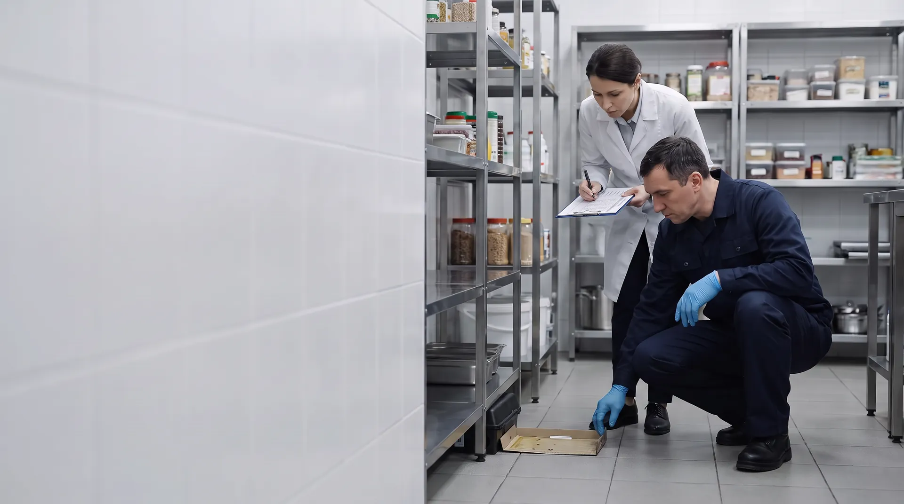

Оценка эффективности дератизации и дезинсекции: сроки и критерии

Эффективность дератизации и дезинсекции оценивают, сравнивая учёт вредителей до и после обработки. Для грызунов СанПиН 3.3686-21 задаёт и методы, и сроки: ловушко-сутки или пылевые площадки до обработки и через 1–2 дня после острых родентицидов или через 10–30 дней после антикоагулянтов. Эффективной считается дератизация, после которой грызунов на объекте нет не менее трёх месяцев при защите здания от проникновения. Для насекомых числового порога в СанПиН нет: если эффекта нет, проверяют качество препарата и повторяют обработку средством другой химической группы. Организовать контроль обязан сам бизнес — своими силами, через исполнителя или стороннюю организацию.
Как оценивают эффективность: дератизация и дезинсекция
- 1–2 дняГрызуны
Учёт после приманок на острых родентицидах
п. 114 СанПиН 3.3686-21 - 10–14 днейТараканы
Контрольный визит: из оотек выходит молодняк, видно, подавлен ли очаг
наш срок контроля - 10–30 днейГрызуны
Учёт после приманок на антикоагулянтах
п. 114 СанПиН 3.3686-21 - 1 месяцТараканы
Объект свободен, если насекомых не находят ни одним методом ни в одном помещении
п. 5.6.4.2 Р 3.5.2.2487-09 - 3 месяцаГрызуны
Дератизация эффективна, если грызунов нет при защите объекта от проникновения
п. 116 СанПиН 3.3686-21
| Что | Дератизация | Дезинсекция |
|---|---|---|
| Когда проверять | Через 1–2 дня после приманок на острых родентицидах, через 10–30 дней — на антикоагулянтах (п. 114 СанПиН 3.3686-21) | Срок в СанПиН не задан. Клеевые ловушки снимают через 1–2 дня после установки (Р 3.5.2.2487-09, п. 5.6.2.8). Контрольный визит по тараканам назначаем через 10–14 дней |
| Чем считают | Ловушко-сутки или контрольно-пылевые площадки (п. 114; МР 3.5.3.0374-25, приложение 2) | Клеевые ловушки 3–5 штук на 10 м², вечерний осмотр, опрос персонала (Р 3.5.2.2487-09, п. 5.6.2.8) |
| Что считается эффектом | В зданиях — доля освобождённой от грызунов площади. Эффективно — нет грызунов не менее 3 месяцев при защите объекта от проникновения (пп. 115–116) | Объект свободен, если насекомых не находят в течение месяца ни одним методом ни в одном помещении (Р 3.5.2.2487-09, п. 5.6.4.2) |
| Если эффекта нет | Повторные истребительные мероприятия, когда учёт подтверждает грызунов выше допустимого уровня (МР 3.5.3.0374-25, п. 4.38), и закрытие путей захода (п. 111) | Проверить качество препарата и повторить обработку инсектицидом другой группы химических веществ (п. 99) |
| Как часто обследуют | На объектах особого эпидемиологического значения — по результатам ежемесячной оценки (п. 110) | На объектах особого эпидемиологического значения — не реже 2 раз в месяц (п. 101) |
| Где фиксируют | Контрольно-учётная карта объекта (МР 3.5.3.0374-25, п. 4.39), журнал, акт | Журнал пест-контроля, акт |
На пищевых объектах критерий жёстче: в торговле продуктами, общепите и пищевой промышленности грызунов и насекомых быть не должно (п. 128 СанПиН 3.3686-21).
Как оценивают эффективность дератизации
Дератизация по СанПиН включает обследование объекта, выбор тактики, сами работы и оценку результатов (п. 109). Методические рекомендации МР 3.5.3.0374-25 называют это полным форматом обработки: оценка объекта до, обработка и оценка эффективности после (п. 4.3).
- Заселён или свободен
- Объект считают заселённым, если есть хотя бы один признак: грызуны попадают в орудия лова, на площадках остаются следы, приманку съедают, зверьков видят открыто, есть жилые норы, свежий помёт или повреждённые продукты и тара. Свободным — если отловов нет и нет следов на площадках, свежего помёта, погрызов и нор (МР 3.5.3.0374-25, пп. 4.8–4.9).
- Методы учёта
- Контрольно-пылевые (следовые) площадки 20×30 см с мукой или тальком: до 10 площадок на объекте меньше 100 м², на объекте больше 100 м² — одна на 20 м². Давилки ставят из расчёта одна на 10 м² во второй половине дня и снимают утром; численность считают в процентах попаданий (МР 3.5.3.0374-25, приложение 2).
- Сроки
- Учёт проводят до обработки и после неё: через 1–2 календарных дня, если использовали приманки на острых родентицидах, и через 10–30 дней — на антикоагулянтах (п. 114 СанПиН 3.3686-21).
- Показатель и критерий
- В зданиях эффективность измеряют долей площади, освобождённой от грызунов (п. 115). Эффективной считается дератизация, после которой грызунов нет не менее трёх месяцев при условии защиты объекта от проникновения (п. 116).
- Как часто
- На объектах особого эпидемиологического значения дератизацию проводят по результатам ежемесячной оценки (п. 110). Это пищевые производства, общепит, хранение и торговля продуктами, гостиницы, медицинские и детские организации и другие объекты из перечня п. 98.
Интенсивность заселения на 100 м² площади
| Интенсивность | Контрольный корм, съеденный за сутки | Норы, пойманные грызуны или заслеженные площадки |
|---|---|---|
| Слабая | менее 0,1 кг | 1 |
| Средняя | 0,1–0,5 кг | 1–5 |
| Высокая | более 0,5 кг | более 5 |
Градации — по п. 4.11 МР 3.5.3.0374-25. Нормативные документы о дератизации и сроки их действия — в нормативной базе, услуга — на странице дератизации для организаций.
Как оценивают эффективность дезинсекции
- Что требует СанПиН
- Дезинсекция включает определение вида членистоногих, учёт численности и заселённости, истребительные мероприятия и контроль их эффективности. Если эффекта нет, проверяют качество препарата и повторяют обработку инсектицидом из другой группы химических веществ (п. 99 СанПиН 3.3686-21).
- Кратность обследований
- Объекты особого эпидемиологического значения обследуют на заселённость членистоногими не реже 2 раз в месяц (п. 101).
- Как считают тараканов
- Клеевые ловушки ставят по всему помещению на разной высоте, 3–5 штук на 10 м², до обработки и после неё; отловленных насекомых считают через 1–2 дня. Дополнительно — осмотр мест обитания в вечернее время и опрос персонала (Р 3.5.2.2487-09, п. 5.6.2.8).
- Когда объект свободен
- Если тараканов не находят в течение месяца ни одним методом ни в одном помещении. При обнаружении хотя бы одного живого таракана заселённые помещения обрабатывают (пп. 5.6.4.2–5.6.4.3).
- Высокая и низкая заселённость
- Высокая — насекомых находят больше чем в 20% помещений, низкая — единичные особи меньше чем в 20% (п. 5.6.4.5).
- Срок освобождения
- Новый объект на обслуживании должен быть освобождён от тараканов в течение двух месяцев; исключение — многоэтажные здания и встроенные объекты (п. 5.6.4.6).
- Наш срок контроля
- Контрольный визит по тараканам назначаем через 10–14 дней после обработки: к этому сроку из оотек выходит молодняк, и видно, подавлен ли очаг.
Как мы проводим дезинсекцию на предприятиях — на странице дезинсекции для организаций.
Что делать, если после обработки вредители остались
- Найти и закрыть пути захода: щели, вводы коммуникаций, ворота и рампы. При эксплуатации зданий нужно соблюдать меры, препятствующие миграции грызунов (п. 111 СанПиН 3.3686-21).
- Убрать доступ к корму, воде и отходам.
- Провести повторные истребительные мероприятия, если учёт подтверждает грызунов выше допустимого уровня (МР 3.5.3.0374-25, п. 4.38), при необходимости сменив приманку или действующее вещество.
- Проверить качество препарата (п. 99 СанПиН 3.3686-21).
- Повторить обработку инсектицидом другой группы химических веществ (п. 99).
- Выполнить предписания: заделать щели, убрать доступ к воде и пище, проверять поставки. Эффект зависит не только от обработки, но и от того, выполняет ли объект предписания (Р 3.5.2.2487-09, п. 5.6.4.1).
Результат контроля и план фиксируем в акте: что нашли, почему нет эффекта, что сделать и кому.
Какие записи подтверждают эффективность на проверке
- Учёт до обработки:вид вредителя, заселённость, точки контроля.
- Учёт после обработки— в срок по п. 114 или по графику контроля.
- Акт с выводом«эффективно» или «нужна повторная обработка» и рекомендациями.
- Журнал пест-контроляили контрольно-учётная карта объекта (МР 3.5.3.0374-25, п. 4.39) и схема точек контроля.
- Если эффекта не было— запись о повторной обработке и смене средства (п. 99).
Если исполнитель не ведёт учёт после обработки, контроль остаётся за вами (пп. 88, 99 СанПиН 3.3686-21). Сохраните свои записи учёта до и после обработки — на проверке их спросят. Образцы и перечни: образец журнала пест-контроля, документы для Роспотребнадзора, проверочные листы 2026.
Кто проводит оценку эффективности
Обеспечить контроль обязан владелец объекта: юридическое лицо или ИП (п. 88 СанПиН 3.3686-21). Проводить его можно своими силами, силами исполнителя или сторонней организацией (п. 99).
Своими силами
Подходит, если на объекте есть обученный сотрудник. Нужны учёт до и после обработки и записи в журнале.
Образец журнала →Контрольный визит после нашей обработки
- Учёт по тем же точкам, что и до обработки, и сравнение результатов.
- Запись в журнал и акт с выводом и рекомендациями.
- Срок: по грызунам — через 1–2 или 10–30 дней в зависимости от приманки, по тараканам — через 10–14 дней.
- Оценку заселённости до обработки проводим на бесплатном выезде.
Стоимость визита — 3 000 ₽
Заказать контрольный визитПроверка работы вашего подрядчика
Бесплатное обследование пест-контроля: точки контроля, журналы, следы вредителей. Полная проверка с актом, реестром несоответствий и лабораторными исследованиями — в санитарном аудите, от 9 000 ₽. Проверка подрядчика входит в стоимость аудита.
Термины оценки эффективности
- Заселённость— наличие вредителей на объекте. Её оценивают по доле помещений или площади, где их обнаружили.
- Освобождённость— доля площади здания, свободной от грызунов после обработки. Главный показатель эффективности дератизации в зданиях (п. 115 СанПиН 3.3686-21).
- Ловушко-сутки— одна ловушка, выставленная на сутки. По ним считают процент попаданий — относительную численность грызунов (МР 3.5.3.0374-25, приложение 2).
- Контрольно-пылевая (следовая) площадка— участок 20×30 см с мукой или тальком. По доле заслеженных площадок судят об интенсивности заселения (там же).
- Острые родентициды и антикоагулянты— приманки быстрого и отсроченного действия. От них зависит срок контроля после дератизации (п. 114).
Кто подготовил материал
ИсточникиОфициальные тексты (проверено 11.11.2026)
- СанПиН 3.3686-21, пп. 82, 88, 98, 128 — pravo.gov.ru
- СанПиН 3.3686-21, пп. 99 и 101 (дезинсекция) — СудАкт
- СанПиН 3.3686-21, пп. 108–116 (дератизация) — СудАкт
- МР 3.5.3.0374-25, пп. 4.3, 4.8–4.11, 4.38–4.39 — ЦЭП-портал, legalacts.ru; приложение 2 (методы учёта) — Гарант
- Р 3.5.2.2487-09 «Руководство по медицинской дезинсекции», утверждено 26.02.2009, введено с 01.05.2009, отметки об утрате силы нет — Гарант; разделы о тараканах — internet-law.ru
Связанные услуги и материалы
Вопросы об оценке эффективности
Сравнивают учёт грызунов до и после обработки: ловушко-сутками или контрольно-пылевыми площадками (п. 114 СанПиН 3.3686-21). В зданиях показатель эффективности — доля площади, освобождённой от грызунов (п. 115).
Через 1–2 календарных дня, если использовали приманки на острых родентицидах, и через 10–30 дней — если на антикоагулянтах (п. 114 СанПиН 3.3686-21).
Та, после которой грызунов на объекте нет не менее трёх месяцев при условии защиты объекта от проникновения (п. 116 СанПиН 3.3686-21). На пищевых объектах, в общепите и торговле продуктами грызунов быть не должно вообще (п. 128).
Клеевыми ловушками: 3–5 штук на 10 м² до и после обработки, учёт через 1–2 дня (Р 3.5.2.2487-09, п. 5.6.2.8). Объект считают свободным, если тараканов не находят в течение месяца ни одним методом ни в одном помещении (п. 5.6.4.2).
Проверить качество препарата и повторить обработку инсектицидом другой группы химических веществ (п. 99 СанПиН 3.3686-21). Одновременно нужно устранить причины: щели, доступ к воде и пище, занос с поставками.
Обеспечить контроль обязан владелец объекта (п. 88 СанПиН 3.3686-21). Проводить его можно своими силами, силами исполнителя или сторонней организацией (п. 99).
По грызунам — через 1–2 дня после приманок на острых родентицидах или через 10–30 дней после антикоагулянтов (п. 114 СанПиН 3.3686-21), по тараканам — через 10–14 дней, когда из оотек выходит молодняк. Стоимость контрольного визита — 3 000 ₽. По договору учёт проводим на плановых визитах.
Записи учёта до и после обработки в журнале или контрольно-учётной карте объекта (МР 3.5.3.0374-25, п. 4.39), акты с результатом контроля и схема точек контроля. Если эффекта не было — запись о повторной обработке и смене средства.
Нужен контрольный визит или проверка подрядчика?
Перезвоним в рабочее время и согласуем дату выезда. Если нужна полная проверка объекта, а не только работы подрядчика, — расскажем о санитарном аудите.
- Учёт по тем же точкам, что и до обработки
- Акт с выводом и рекомендациями
- Запись в журнал пест-контроля